第3章 在线程间共享数据
本章主要内容
- 线程间共享数据的问题
- 用互斥元保护数据
- 用于保护共享数据的替代工具
将线程用作并行的关键优点之一，是在它们之间简单、直接地共享数据的潜力。所以既然我们已经介绍了启动和管理线程，现在让我们来看看共享数据的相关问题。
假设你正与朋友合租着一套公寓。公寓里只有一个厨房和一间浴室。除非你们特别的友好，否则你们不能同时使用浴室。如果你的室友长时间占据着浴室，当你需要用它时就会很不爽。同样地，尽管两人同时做饭也是可以的，但若是你们有一个组合烤箱，如果你们中的一个想要烤香肠而另一个想要烘蛋糕，这就没办法皆大欢喜。此外，大家都知道共享空间的挫败感，以及一个任务做到一半才发现有人借走了我们需要的东西，或者某件东西无意中被别人改变了。
这和线程是相同的。如果你在线程之间共享数据，你需要设置规则，哪个线程可以访问数据的哪一位，什么时间以及如何将更改传达给关心此数据的其他线程。在单个进程中的多个线程之间可以轻易地共享数据不单纯是优点——它也可以是个很大的缺点。共享数据的不正确使用是与并发有关的错误的最大诱因之一，造成的后果可比香肠味道的蛋糕糟多了。
本章涉及了在C++线程间安全地共享数据，避免可能出现的潜在问题，同时使收益最大化。
3.1 线程之间共享数据的问题
从整体上来看，所有线程之间共享数据的问题，都是修改数据导致的。如果所有的共享数据都是只读的，就没有问题，因为一个线程所读取的数据不受另一个线程是否正在读取相同的数据而影响（Ifallshareddataisread-only, there’snoproblem,becausethedatareadbyonethreadisunaffectedbywhetherornotanotherthreadisreadingthesamedata） 。然而，如果数据是在线程之间共享的，同时一个或多个线程开始修改数据，就可能有很多的麻烦。在这种情况下，你必须要小心确保一切安好。
一个被广泛用来帮助程序员推导代码的概念，就是不变量（invariants） ——对于特定的数据结构总是为真的语句，例如“此变量包含了列表中项目的数量。”这些不变量在更新中经常被打破，尤其是在数据结构比较复杂或是更新需要修改超过一个值时。
考虑一个双向链表，它的每一个节点持有指向表中下一节点和前一节点的指针。其中一个不变量就是如果你跟随从一个节点（A）到另一个节点（B）的“下一个”指针，则那个节点（B）的“前一个”指针指回到前一个节点（A）。为了从表中删除一个节点，两边的节点都必须被更新为指向彼此。一旦其中一个被更新，直到另一侧的节点也被更新前不变量是打破的，当更新完成后，再次持有不变量。
从这样的表中删去一个条目的步骤如图3.1所示。
1 标识要删除的节点（N）。
2 将N的前一节点到N的链接更新为指向N的后一节点。
3 将N的后一节点到N的链接更新为指向N的前一节点。
4 删除节点N。
如你所见，在步骤b和c之间，在一个方向上的链接与在相反的方向上的链接不一致，并且不变量损坏。
修改线程之间共享数据的最简单的潜在问题就是破坏不变量。如果你没有为确保其他情况而做些特别的工作，要是一个线程正在读取双向链表，而另一个线程正在删除一个节点，那么读线程很有可能看到一个节点仅被部分删除了的链表（因为在图3.1的步骤b中，只有其中一个链接被改变了），因此不变量损坏。不变量损坏的后果可能有所不同，如果其他线程只是在图中由左到右读取链表项，它会跳过正被删除的节点。另一方面，如果又一个线程试图删除图中最右边的节点，则可能最终永久性破坏数据结构，并使得程序崩溃。无论结果如何，这是并发代码中错误的最常见诱因之一的例子：竞争条件（racecondition） 。
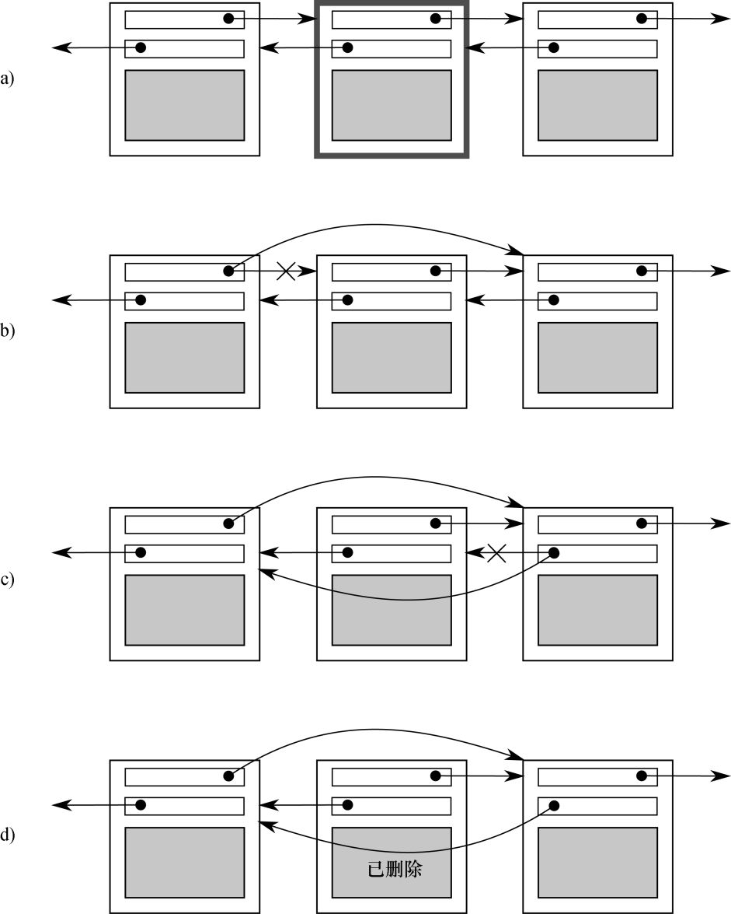
图3.1 从双向链表中删除一个节点
3.1.1 竞争条件
假设你在电影院买票看电影。如果是个大电影院，会有多个收银员收款，所以不止一个人可以同时买票。如果有人在另一个收银台也购买了与你同一部电影的票，这时可供你选择的座位取决于事实上是其他人先订购还是你先订购。如果只剩少量座位，这种差异可能会很关键。字面上可以看作一个比赛，看谁得到最后的电影票。这是一个竞争条件（racecondition） 的例子：得到哪个座位（或者甚至是否得到票）取决于两次购买的相对顺序。
在并发性中，竞争条件就是结果取决于两个或更多线程上的操作执行的相对顺序的一切事物。线程竞争执行各自的操作。在大多数情况下，这是比较良性的，因为所有可能的结果都是可以接受的，尽管他们可能会随着不同的相对顺序而改变。例如，如果两个线程都将项目添加到一个队列中等待处理，在保持系统不变量的前提下，哪个项目先被添加一般是不影响的。当竞争条件导致损坏不变量时才会出现问题，以刚才提到的双向链表为例。在谈到并发时，术语竞争条件（racecondition） 通常用来表示有问题的（problematic） 竞争条件。良性的竞争条件没什么意思，也不是错误的诱因。C++标准还定义了术语数据竞争（datarace） ，表示因对单个对象的并发修改而产生的特定类型的竞争条件（参见5.1.2节），数据竞争造成可怕的未定义行为（undefinedbehavior） 。
有问题的竞争条件通常发生在完成操作需要修改两个或多个不同的数据块的地方，就如示例中的两个链表指针。因为该操作必须访问两块独立的数据，这必须在单独的指令中进行修改，而当只有其中一条指令完成时，另一个线程有可能访问此数据结构。竞争条件往往很难找到且难以复制，因为机遇的窗口很小。如果这些修改作为连续的CPU指令来完成，在任意一次运行中显现问题的机会是非常小的，即使数据结构正被另一个线程并发访问。随着系统上负载的升高，以及执行该操作次数的增加，有问题的执行序列出现的机会也增加。这种问题几乎是不可避免地会在最不方便的时间暴露出来。由于竞争条件一般是时间敏感的，它们常常在应用程序运行于调试工具下时完全消失，因为调试工具会影响程序的时间，即使只是轻微地。
如果你正在编写多线程程序，竞争条件会轻易地成为你生活的灾难。编写使用并发的软件中大量的复杂性来源于避免有问题的竞争条件。
3.1.2 避免有问题的竞争条件
有几种方法来处理有问题的竞争条件。最简单的选择是用保护机制封装你的数据结构，以确保只有实际执行修改的线程能够在不变量损坏的地方看到中间数据。从其他访问该数据结构线程的角度看，这种修改要么还没开始要么已完成。C ++标准库提供了一些这样的机制，在本章中均有述及。
另一个选择是修改数据结构的设计及其不变量，从而令修改作为一系列不可分割的变更来完成，每个修改均保留其不变量。这通常被称为无锁编程（lock-freeprogramming） ，且难以尽善尽美。如果你工作在这个级别上，内存模型的细微差异和确认哪些线程可能看到哪组值，会变得很复杂。内存模型在第5章中阐述，而无锁编程在第7章中进行讨论。
处理竞争条件的另一种方式是将对数据结构的更新作为一个事务（transaction） 来处理，就如同在一个事务内完成数据库的更新一样。所需的一系列数据修改和读取被存储在一个事务日志中，然后在单个步骤中进行提交。如果该提交因为数据结构已被另一个线程修改而无法进行，该事务将重新启动。这称为软件事务内存（softwaretransactionalmemory，STM） ，在写作时这是一个活跃的研究领域。这在本书中不会述及，因为在C++中没有对STM的直接支持。然而，私下里做些事情然后在单个步骤中提交的基本思想，我会在后面提到。
由C++标准提供的保护共享数据的最基本机制是互斥元（mutex） ，那么我们先来看一看。
3.2 用互斥元保护共享数据
于是，你有一个类似于上一节中链表那样的共享数据结构，你想要保护它免于竞争条件以及可能因此产生的不变量损坏。如果你可以将所有访问该数据结构的代码块标记为互斥的（mutuallyexclusive） ，岂不是很好？如果任何线程运行了其中之一，所有其他试图访问此数据结构的线程就必须一直等到第一个线程完成。这就使得线程不可能看到损坏的不变量，除非它是进行修改的线程。
嗯，这并非无稽之谈——它正是使用称为互斥元（mutex, mutualexclusion） 的同步原语所能得到的。在访问共享数据结构之前，锁定（lock） 与该数据相关的互斥元，当访问数据结构完成后，解锁（unlock） 该互斥元。线程库会确保一旦一个线程已经锁定某个互斥元，所有其他试图锁定相同互斥元的线程必须等待，直到成功锁定了该互斥元的线程解锁此互斥元。这就确保所有线程看到共享数据自洽的一面，不带有任何损坏的不变量。
互斥元是C++中最常见的数据保护机制，但并非灵丹妙药。精心组织代码来保护正确的数据（参见3.2.2节）以及避免接口中固有的竞争条件（参见3.2.3节）也是很重要的。互斥元也伴随着自己的问题，以死锁（deadlock） （参见3.2.4节）和保护过多或过少数据（参见3.2.8节）的形式。接下来，让我们从基础开始。
3.2.1 使用C++中的互斥元
在C++中，通过构造std::mutex
的实例创建互斥元，调用成员函数lock()
来锁定它，调用成员函数unlock()
来解锁它。然而，直接调用成员函数是不推荐的做法，因为这意味着你必须记住在离开函数的每条代码路径上都调用unlock()
，包括由于异常所导致的在内。作为替代，标准C ++库提供了std::lock_guard
类模板，实现了互斥元的RAII惯用语法；它在构造时锁定所给的互斥元，在析构时将互斥元解锁，从而保证被锁定的互斥元始终被正确解锁。清单3.1的代码展示了如何使用std::mutex
保护一个可被多个线程访问的列表，连同std::lock_guard
。二者都声明于<mutex>
头文件中。
清单3.1 用互斥元保护列表
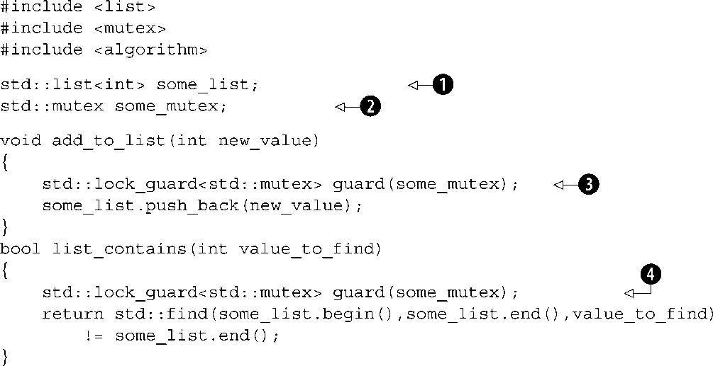
在清单3.1中，有一个全局变量❶，它被相应的std::mutex
的全局实例❷保护。在add_to_list()
❸以及list_contains()
❹中对std::lock_guard<std::mutex>
的使用意味着这些函数中的访问是互斥的，list_contains()
将无法在add_to_list()
进行修改的半途中看到该列表。
尽管这种全局变量的使用偶尔也是恰当的，在大多数情况下，不用全局变量，而是在类中将互斥元和受保护的数据组织在一起，是很普遍的。这是一个标准的面向对象应用程序设计规则，通过将它们放在一个类中，清楚地标记他们是相关的，还可以封装函数以及强制保护。在这种情况下，函数add_to_list
和list_contains
将成为类的成员函数，互斥元和受保护的数据都作为类的private
成员，使其更容易鉴别哪些代码可以访问数据，哪些代码需要锁定互斥元。如果类的所有成员函数在访问任意其他数据成员之前锁定互斥元，并且在操作完成时解锁，则数据对于所有的访问者都被很好地保护了。
其实，并不完全 是那样，你将敏锐地发现，如果其中一个成员函数返回对受保护数据的指针或引用，那么所有成员函数都以良好顺序的方式锁定互斥元也是没关系的，因为你已在保护中捅了一个大窟窿。能够访问（并可能修改）该指针或引用的任意代码现在可以访问受保护的数据而无需锁定该互斥元 。因此使用互斥元保护数据需要仔细设计接口，以确保在有任意对受保护的数据进行访问之前，互斥元已被锁定，且不留后门。
3.2.2 为保护共享数据精心组织代码
如你所见，用互斥元保护数据并不只是像在每个成员函数中拍进一个std::lock_guard
对象那样容易，一个迷路的指针或引用，所有的保护都将白费。在一个层面上，检查迷路的指针或引用是容易的，只要没有一个成员函数通过其返回值或输出参数，返回受保护数据的指针或引用给其调用者，数据就安全了。如果更深入一些，它没有那么直观——远远没有。除了检查成员函数没有向其调用者传出指针和引用，检查它们没有向其调用的不在你掌控之下的函数传入这种指针和引用，也是很重要的。这同样危险，那些函数可能将指针和引用存储在某个地方，将来可以脱离互斥元的保护而被使用。在这方面特别危险的是，函数是通过函数参数或其他方式在运行时提供的，如清单3.2所示。
清单3.2 意外地传出对受保护数据的引用
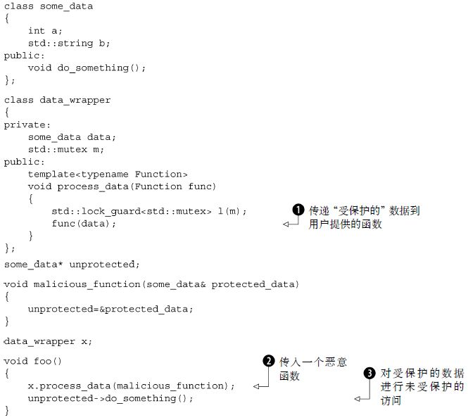
在这个例子中，process_data
中的代码看起来挺无害，受到std::lock_guard
很好地保护，但对用户提供的函数func
的调用❶意味着foo
可以传入malicious_function
❷来绕过保护，然后无需锁定互斥元即可调用do_something()
❸。
从根本上说，这个代码的问题在于它没有完成你所设置的内容，标记所有访问该数据结构的代码为互斥的（mutuallyexclusive）
。在这个例子中，忽略了foo()
中调用unprotected->do_something()
的代码。不幸的是，这部分问题不是C++线程库所能帮助你的，而这取决于作为程序员的你，去锁定正确的互斥元来保护你的数据。想想好的一面，你有了一个可遵循的准则，它会在这些情况下帮助你：不要将对受保护数据的指针和引用传递到锁的范围之外，无论是通过从函数中返回它们、将其存放在外部可见的内存中，还是作为参数传递给用户提供的函数
。
虽然这是在试图使用互斥元来保护共享数据时常犯的错误，但这绝非唯一可能的隐患。在下一节中你会看到，可能仍然会有竞争条件，即便当数据被互斥元保护着。
3.2.3 发现接口中固有的竞争条件
仅仅因为使用了互斥元或其他机制来保护共享数据，未必会免于竞争条件，你仍然需要确定保护了适当的数据。再次考虑双向链表的例子。为了让线程安全地删除节点，你需要确保已阻止对三个结点的并发访问。要删除的节点及其两边的结点。如果你分别保护访问每个节点的指针，就不会比未使用互斥元的代码更好，因为竞争条件仍会发生——需要保护的不是个别步骤中的个别结点，而是整个删除操作中的整个数据结构。这种情况下最简单的解决办法，就是用单个互斥元保护整个列表，如清单3.1中所示。
仅仅因为在列表上的个别操作是安全的，你还没有摆脱困境。你仍然会遇到竞争条件，即便是一个非常简单的接口。考虑像std::stack
容器适配器这样的堆栈数据结构，如清单3.3中所示。除了构造函数和swap()
，对std::stack
你只有五件事情可以做：可以push()
一个新元素入栈、pop()
一个元素出栈、读top()
元素、检查它是否empty()
以及读取元素数量——堆栈的size()
。如果更改top()
使得它返回一个副本，而不是引用（这样你就遵循了3.2.2节的准则），同时用互斥元保护内部数据，该接口依然固有地受制于竞争条件。这个问题对基于互斥元的实现并不是独一无二的。它是一个接口问题，因此对于无锁实现仍然会发生竞争条件。
清单3.3 std::stack容器适配器的接口
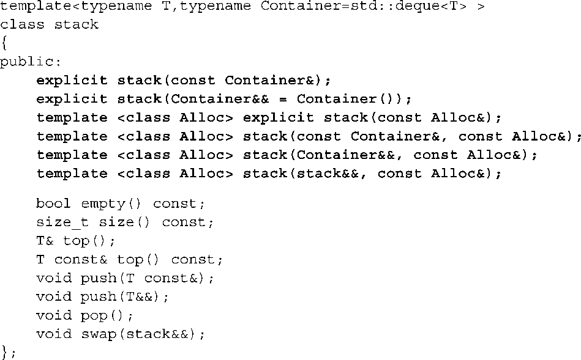
这里的问题是empty()
的结果和size()
不可靠。虽然它们可能在被调用时是正确的，一旦它们返回，在调用了empty()
或size()
的线程可以使用该信息之前，其他线程可以自由地访问堆栈，并且可能push()
新元素入栈或pop()
已有的元素出栈。
特别地，如果该stack
实例是非共享的
，如果栈非空，检查empty()
并调用top()
访问顶部元素是安全的，如下所示。
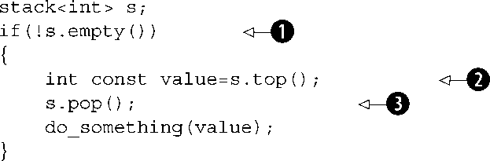
它不仅在单线程代码中是安全的，预计为：在空堆栈上调用top()
是未定义的行为。对于共享的stack
对象，这个调用序列不再安全
，因为在调用empty()
❶和调用top()
❷之间可能有来自另一个线程的pop()
调用，删除最后一个元素。因此，这是一个典型的竞争条件，为了保护栈的内容而在内部使用互斥元，却并未能将其阻止，这就是接口的影响。
怎么解决呢？发生这个问题是接口设计的后果，所以解决办法就是改变接口。然而，这仍然回避了问题，要作出什么样的改变？在最简单的情况下，你只要声明top()
在调用时如果栈中没有元素则引发异常。虽然这直接解决了问题，但它使编程变得更麻烦，因为现在你得能捕捉异常，即使对empty()
的调用返回false
。这基本上使得empty()
的调用变得纯粹多余。
如果你仔细看看前面的代码片段，还有另一个可能的竞争条件，但这一次是在调用top()
❷和调用pop()
❸之间。考虑运行着前面代码片段的两个线程，它们都引用着同一个stack
对象s
。这并非罕见的情形，当为了性能而使用线程时，有数个线程在不同的数据上运行相同的代码是很常见的，并且一个共享的stack
对象非常适合用来在它们之间分隔工作。假设一开始栈里有两个元素，那么你不用担心在任一线程上的empty()
和top()
之间的竞争，只需考虑可能的执行模式。
如果栈从内部被互斥元保护，只有一个线程可以在任何时间运行栈的成员函数，那么这些调用就能得以很好地交错，而对do_something()
的调用可以同时运行。一个可能的执行正如表3.1所示。
表3.1 两个线程堆栈上可能的操作顺序
|
线程A |
线程B |
|---|---|
|
if(!s.empty()) |
|
如你所见，如果这些是仅有的在运行的线程，在两次调用top()
修改该栈之间没有任何东西，所以这两个线程将看到相同的值。不仅如此，在
pop()
的两次调用之间没有对
top()
的调用
。因此，栈上的两个值其中一个还没被读取就被丢弃了，而另一个被处理了两次。这是另一种竞争条件，远比empty()
/top()
竞争的未定义行为更槽糕。从来没有任何明显的错误发生，同时错误造成的后果可能和诱因差距甚远，尽管他们明显取决于do_something()
到底做什么。
这要求对接口进行更加激进的改变，在互斥元的保护下结合对top()
和pop()
两者的调用。Tom Cargill
[1]
指出，如果栈上对象的拷贝构造函数能够引发异常，结合调用可能会导致问题。从Herb Sutter
[2]
的异常安全的观点来看，这个问题被处理得较为全面，但潜在的竞争条件为这一结合带来了新的东西。
对于那些尚未意识到这个问题的人，考虑一下stack<vector<int>>
。现在，vector
是一个动态大小的容器，所以当你复制vector
时，为了复制其内容，库就必须从堆中分配更多的内存。如果系统负载过重，或有明显的资源约束，此次内存分配就可能失败，于是vector
的拷贝构造函数可能引发std::bad_alloc
异常。如果vector
中含有大量的元素的话则尤其可能。如果pop()
函数被定义为返回出栈值，并且从栈中删除它，就会有潜在的问题。仅在栈被修改后
，出栈值才返回给调用者，但复制数据以返回给调用者的过程可能会引发异常。如果发生这种情况，刚从栈中出栈的数据会丢失，它已经从栈中被删除了，但该复制却没成功！std::stack
接口的设计者笼统地将操作一分为二。获取顶部的元素（top()
），然后将其从栈中删除（pop()
），以致于你无法安全地复制数据，它将留在栈上。如果问题是堆内存不足，也许应用程序可以释放一些内存，然后再试一次。
不幸的是，这种划分正是你在消除竞争条件中试图去避免的！值得庆幸的是，还有替代方案，但他们并非无代价的。
1．选项1：传入引用
第一个选项是把你希望接受出栈值的变量的引用，作为参数传递给对pop()
的调用。
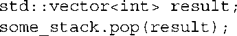
这在很多情况下都适用，但它有个明显的缺点，要求调用代码在调用之前先构造一个该栈值类型的实例，以便将其作为目标传入。对于某些类型而言这是行不通的，因为构造一个实例在时间和资源方面是非常昂贵的。对于其他类型，这并不总是可能的，因为构造函数需要参数，而在代码的这个位置不一定可用。最后，它要求所存储的类型是可赋值的。这是一个重要的限制。许多用户定义的类型不支持赋值，尽管它们可能支持移动构造函数，或者甚至是拷贝构造函数（从而允许通过值来返回）。
2．选项2：要求不引发异常的拷贝构造函数或移动构造函数
对于有返回值的pop()
而言只有一个异常安全问题，就是以值进行的返回可能引发异常。许多类型具有不引发异常的拷贝构造函数，并且在C++标准中有了新的右值引用的支持（参见附录A中A.1节），越来越多的类型将不会引发异常的移动构造函数，即便他们的拷贝构造函数会如此。一个有效的选择，就是把对线程安全堆栈的使用，限制在能够安全地通过值来返回且不引发异常的类型之内。
虽然这样安全了，但并不理想。尽管你可以在编译时使用std::is_nothrow_copy_constructible
和std::is_nothrow_move_constructible
类型特征，来检测一个不引发异常的拷贝或移动构造函数的存在，但这却很受限制。相比于具有不能引发异常的拷贝和/或移动构造函数的类型，有更多的用户定义类型具有能够引发异常的拷贝构造函数且没有移动构造函数（尽管这会随着人们习惯了C ++11中对右值引用的支持而改变）。如果这种类型不能被存储在你的线程安全堆栈中，是不幸的。
3．选项3：返回指向出栈项的指针
第三个选择是返回一个指向出栈项的指针，而非通过值来返回该项。其优点是指针可以被自由地复制而不会引发异常，这样你就避免了Cargill的异常问题。其缺点是，返回一个指针时需要一种手段来管理分配给对象的内存，对于像整数这样简单的类型，这种内存管理的成本可能会超过仅通过值来返回该类型。对于任何使用此选项的接口，std::shared_ptr
会是指针类型的一个好的选择。它不仅避免了内存泄漏，因为一旦最后一个指针被销毁则该对象也会被销毁，并且库可以完全控制内存分配方案且不必使用new
和delete
。对于优化用途来说这是很重要的，要求用new
分别分配堆栈中的每一个对象，会比原来非线程安全的版本带来大得多的开销。
4．选项4：同时提供选项1以及2或3
灵活性永远不应被排除在外，特别是在通用的代码中。如果你选择选项2或3，那么同时提供选项1也是相对容易的，这也为你的代码的用户提供了选择的能力，为了很小的额外成本，哪个选项对他们是最适合的。
5．一个线程安全堆栈的示范定义
清单3.4展示了在接口中没有竞争条件的栈的类定义，实现了选项1和3。pop()
有两个重载，一个接受存储该值的位置的引用，另一个返回std:: shared_ptr<>
。它具有一个简单的接口，只有两个函数，push()
和pop()
。
清单3.4 一个线程安全栈的概要类定义
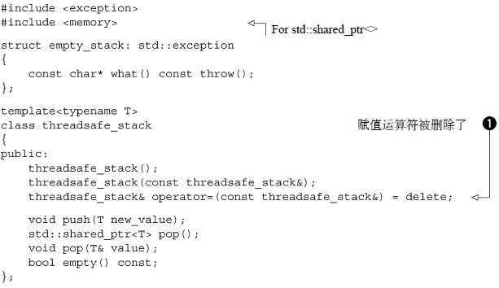
通过削减接口，你考虑到了最大的安全性，甚至对整个堆栈的操作都受到限制。栈本身不能被赋值，因为赋值运算符被删除❶（参见附录A中A.2节），而且也没有swap()
函数。然而，它可以被复制，假设栈的元素可以被复制。如果栈是空的，pop()
函数引发一个empty_stack
异常，所以即使在调用empty()
后栈被修改，一切仍将正常工作。正如选项3的描述中提到的，如果需要，std::shared_ptr
的使用允许栈来处理内存分配问题，同时避免对new
和delete
的过多调用。五个堆栈操作现在变成三个，push()
、pop()
和empty()
。甚至empty()
都是多余的。接口的简化可以更好地控制数据。你可以确保互斥元为了操作的整体而被锁定。清单3.5展现了一个简单的实现，一个围绕std::stack<>
的封装器。
清单3.5 一个线程安全栈的详细类定义
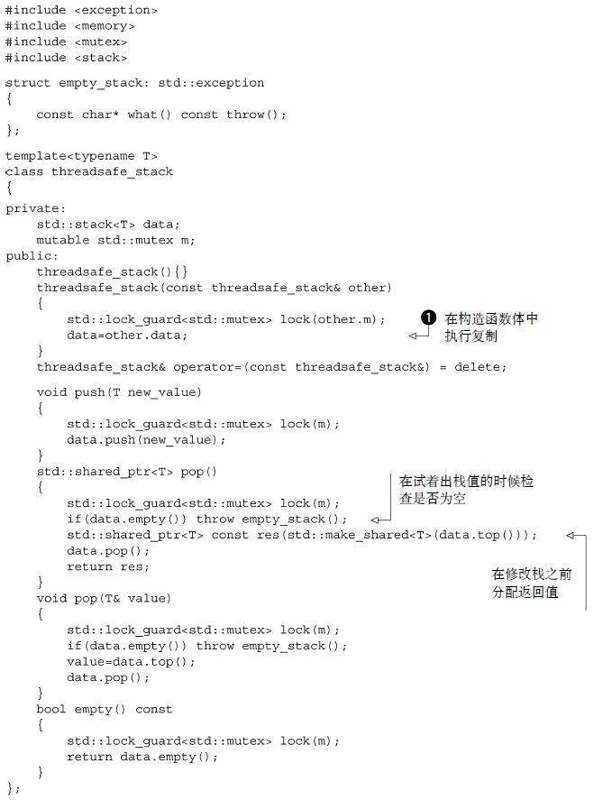
这个栈的实现实际上是可复制的（copyable） ——源对象中的拷贝构造函数锁定互斥元，然后复制内部栈。你在构造函数体中进行复制❶而不是成员初始化列表，以确保互斥元被整个副本持有。
top()
和pop()
的讨论表明，接口中有问题的竞争条件基本上因为锁定的粒度过小而引起。保护没有覆盖期望操作的整体。互斥元的问题也可以由锁定的粒度过大而引起；极端情况是单个的全局互斥元保护所有共享的数据。在一个有大量共享数据的系统中，这可能会消除并发的所有性能优势，因为线程被限制为每次只能运行一个，即便是在他们访问数据的不同部分的时候。被设计为处理多处理器系统的Linux内核的第一个版本，使用了单个全局内核锁。虽然这也能工作，但却意味着一个双处理器系统通常比两个单处理器系统的性能更差，四个处理器系统的性能远远没有四个单处理器系统的性能好。有太多对内核的竞争，因此在更多处理器上运行的线程无法进行有效的工作。Linux内核的后续版本已经转移到一个更细粒度的锁定方案，因而四个处理器的系统性能更接近理想的单处理器系统的4倍，因为竞争少得多。
细粒度锁定方案的一个问题，就是有时为了保护操作中的所有数据，需要不止一个互斥元。如前所述，有时要做的正确的事情是增加被互斥元所覆盖的数据粒度，以使得只需要一个互斥元被锁定。然而，这有时是不可取的，例如互斥元保护着一个类的各个实例。在这种情况下，在下个级别进行锁定，将意味着要么将锁丢给用户，要么就让单个互斥元保护该类的所有实例，这些都不甚理想。
如果对于一个给定的操作你最终需要锁定两个或更多的互斥元，还有另一个潜在的问题潜伏在侧：死锁（deadlock） 。这几乎是竞争条件的反面，两个线程不是在竞争成为第一，而是每一个都在等待另外一个，因而都不会有任何进展。
3.2.4 死锁：问题和解决方案
试想一下，你有一个由两部分组成的玩具，并且你需要两个部分一起玩——例如，玩具鼓和鼓槌。现在，假设你有两个小孩，他们两人都喜欢玩它。如果其中一人同时得到鼓和鼓槌，那这个孩子就可以高兴地玩鼓，直到厌烦。如果另一个孩子想要玩，就得等，不管这让他多不爽。现在想象一下，鼓和鼓槌被（分别）埋在玩具箱里，你的孩子同时都决定玩它们，于是他们去翻玩具箱。其中一个发现了鼓，而另一个发现了鼓槌。现在他们被困住了，除非一人让另一人玩，不然每个人都会赖着他已有的东西，并要求另一人将另一部分给自己，否则就都玩不成。
现在想象一下，你没有抢玩具的孩子，但却有争夺互斥元的线程。一对线程中的每一个都需要同时锁定两个互斥元来执行一些操作，并且每个线程都拥有了一个互斥元，同时等待另外一个。线程都无法继续，因为每个线程都在等待另一个释放其互斥元。这种情景称为死锁（deadlock） ，它是在需要锁定两个或更多互斥元以执行操作时的最大问题。
为了避免死锁，常见的建议是始终使用相同的顺序锁定这两个互斥元。如果你总是在互斥元B之前锁定互斥元A，那么你永远不会死锁。有时候这是很直观的，因为互斥元服务于不同的目的，但其他时候却并不那么简单，比如当互斥元分别保护相同类的各个实例时。例如，考虑同一个类的两个实例之间的数据交换操作，为了确保数据被正确地交换，而不受并发修改的影响，两个实例上的互斥元都必须被锁定。然而，如果选择了一个固定的顺序（例如，作为第一个参数提供的实例的互斥元，然后是作为第二个参数所提供的实力的互斥元），可能适得其反：它表示两个线程尝试通过交换参数，而在相同的两个实例之间交换数据，你将产生死锁。
幸运的是，C++标准库中的std::lock
可以解决这一问题——std::lock
函数可以同时锁定两个或更多的互斥元，而没有死锁的风险。清单3.6中的例子展示了如何使用它来完成简单的交换操作。
清单3.6 在交换操作中使用std::lock()和std::lock_guard
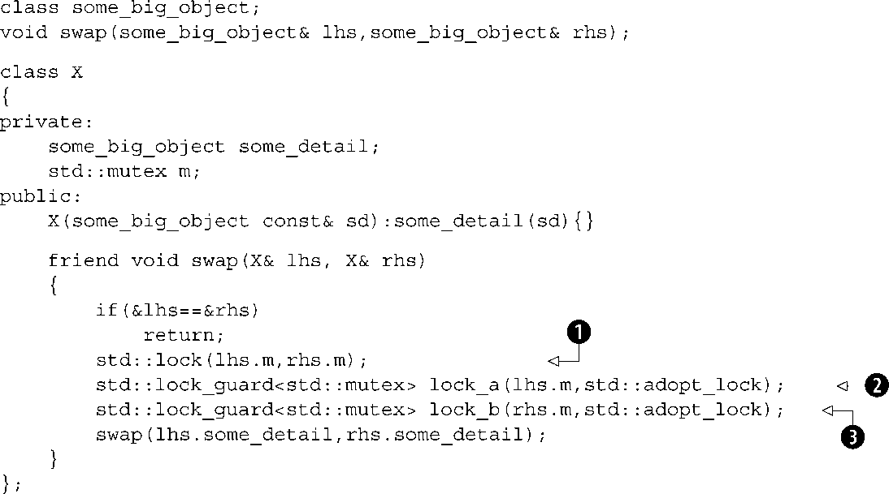
首先，检查参数以确保它们是不同的实例，因为试图在你已经锁定了的std::mutex
上获取锁，是未定义的行为。（允许同一线程多重锁定的互斥元类型为std::recursive_mutex
。详见3.3.3节）然后，调用std::lock()
锁定这两个互斥元❶，同时构造两个std::lock_guard
的实例❷❸，每个实例对应一个互斥元。额外提供一个参数std::adopt_lock
给互斥元，告知std::lock_guard
对象该互斥元已被锁定，并且它们只应沿用互斥元上已有锁的所有权，而不是试图在构造函数中锁定互斥元。
这就确保了通常在受保护的操作可能引发异常的情况下，函数退出时正确地解锁互斥元，这也考虑到了简单返回。此外，值得一提的是，在对std::lock
的调用中锁定lhs.m
抑或是rhs.m
都可能引发异常，在这种情况下，该异常被传播出std::lock
。如果std::lock
已经成功地在一个互斥元上获取了锁，当它试图在另一个互斥元上获取锁的时候，就会引发异常，前一个互斥元将会自动释放。std::lock
提供了关于锁定给定的互斥元的全或无的语义。
尽管std::lock
能够帮助你在需要同时获得两个或更多锁的情况下避免死锁，但是如果要分别获取锁，就没用了。在这种情况下，你必须依靠你作为开发人员的戒律，以确保不会得到死锁。这谈何容易，死锁是在编写多线程代码时遇到的最令人头疼的问题之一，而且往往无法预测，大部分时间内一切都工作正常。然而，有一些相对简单的规则可以帮助你写出无死锁的代码。
3.2.5 避免死锁的进一步指南
死锁并不仅仅产生于锁定，虽然这是最常见的诱因。你可以通过两个线程来制造死锁，不用锁定，只需令每个线程在std::thread
对象上为另一线程调用join()
。在这种情况下，两个线程都无法取得进展，因为正等着另一个线程完成，就像孩子们争夺他们的玩具。这种简单的循环可以发生在任何地方，一个线程等待另一个线程执行一些动作而另一个线程同时又在等待第一个线程，而且这不仅限于两个线程，三个或更多线程的循环也会导致死锁。避免死锁的准则全都可以归结为一个思路，如果有另外一个线程有可能在等待你，那你就别等它。这个独特的准则为识别和消除别的线程等待你的可能性提供了方法。
1．避免嵌套锁
第一个思路是最简单的，如果你已经持有一个锁，就别再获取锁。如果你坚持这个准则，光凭使用锁是不可能导致死锁的，因为每个线程仅持有一个锁。你仍然会从其他事情（像是线程相互等待）中得到死锁，但是互斥元锁定可能死锁最常见的诱因。如果需要获取多个锁，为了避免死锁，就以std::lock
的单个动作来实行。
2．在持有锁时，避免调用用户提供的代码
这是前面一条准则的简单后续。因为代码是用户提供的，你不知道它会做什么，它可能做包括获取锁在内的任何事情。如果你在持有锁时调用用户提供的代码，并且这段代码获取一个锁，你就违反了避免嵌套锁的准则，可能导致死锁。有时候这是无法避免的。如果你在编写泛型代码，如3.2.3节中的堆栈，在参数类型上的每一个操作都是用户提供的代码。在这种情况下，你需要新的准则。
3．以固定顺序获取锁
如果你绝对需要获取两个或更多的锁，并且不能以std::lock
的单个操作取得，次优的做法是在每个线程中以相同的顺序获取它们。我在3.2.4节中曾谈及此点，是作为在获取两个互斥元时避免死锁的方法，关键是要以一种在线程间相一致的方法来定义其顺序。在某些情况下，这是相对简单的。例如，看一看3.2.3节中的堆栈——互斥元在每个栈实例的内部，但对于存储在栈中的数据项的操作，则需要调用用户提供的代码。然而，你可以添加约束，对于存储在栈中的数据项的操作，都不应对栈本身进行任何操作。这样就增加了栈的使用者的负担，但是将数据存储在一个容器中来访问该容器是很罕见的，并且一旦发生就会十分明显，因此这并不是一个很难承受的负担。
在别的情况下，可能就不那么直观，就像在3.2.4节中你所看到的交换操作那样。至少在这种情况下，你可以同时锁定这些互斥元，但并不总是可能的。如果你回顾一下3.1节中链表的例子，你会看到一种保护链表的可能性，就是让每个结点都有一个互斥元。然后，为了访问这个链表，线程必须获取它们感兴趣的每个结点上的锁。对于一个删除某项的线程，它就必须获得三个结点上的锁，要删除的结点以及它两边的结点，因为它们全都要以某种方式进行修改。同样地，为了遍历链表，线程在获取序列中下一个结点上的锁的时候，必须保持当前结点上的锁，以确保指向下一结点的指针在此期间不被修改。一旦获取到下一个结点上的锁，就可以释放前面结点上的锁，因为它已经没用了。
这种逐节向上的锁定方式允许多线程访问链表，前提是每个线程访问不同的结点。然而，为了避免死锁，必须始终以相同的顺序锁定结点。如果两个线程试图用逐节锁定的方式以相反的顺序遍历链表，它们就会在链表中间产生相互死锁。如果结点A和B在链表中相邻，一个方向上的线程会试图保持锁定结点A，并尝试获取结点B上的锁。而另一个方向上的线程会保持锁定结点B，并且尝试获得结点A上的锁——死锁的典型情况。
同样地，当删除位于结点A和C之间的结点B时，如果该线程在获取结点A和C上的锁之前获取B上的锁，它就有可能与遍历链表的线程产生死锁。这样的线程会试图首先锁定A或C（取决于遍历的方向），但是它接下来会发现无法获得结点B上的锁，因为正在进行删除操作的线程持有了结点B上的锁，并试图获得结点A和C上的锁。
在这里防止死锁的一个办法是定义遍历的顺序，让线程必须始终在锁定B之前锁定A、在锁定C之前锁定B。该方法以禁止反向遍历为代价来消除产生死锁的可能。对于其他数据结构，常常会建立类似的约定。
4．使用锁层次
虽然这实际上是定义锁定顺序的一个特例，但锁层次能够提供一种方法，来检查在运行时是否遵循了约定。其思路是将应用程序分层，并且确认所有能够在任意给定的层级上被锁定的互斥元。当代码试图锁定一个互斥元时，如果它在较低层已经持有锁定，那么就不允许它锁定该互斥元。通过给每一个互斥元分配层号，并记录下每个线程都锁定了哪些互斥元，你就可以在运行时进行检查了。清单3.7列出了两个线程使用层次互斥元的例子。
清单3.7 使用锁层次来避免死锁
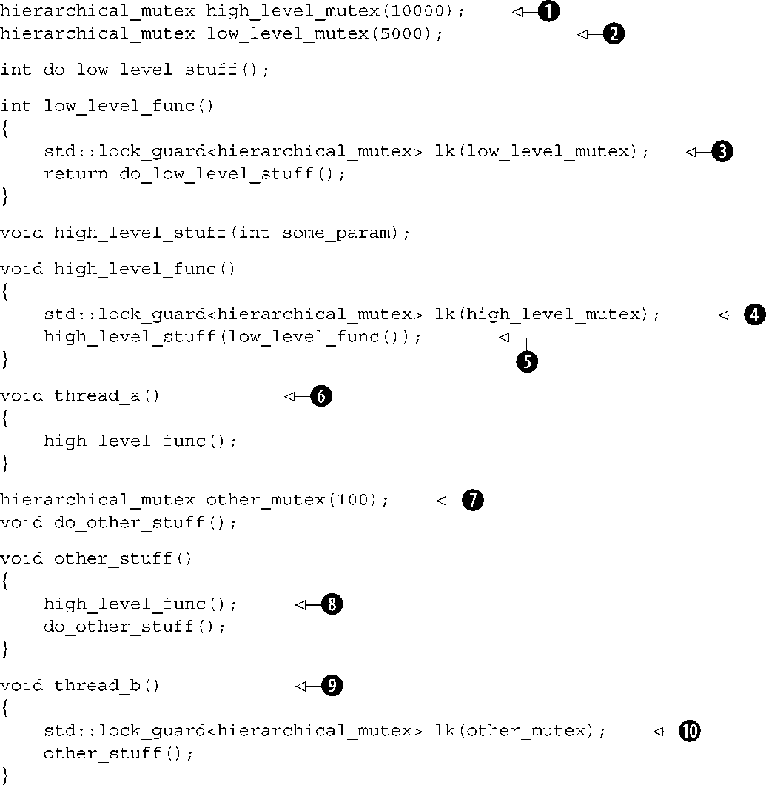
thread_a()
❻遵守了规则，所以它运行良好。另一方面，thread_b()
❾无视了规则，因此将在运行时失败。thread_a()
调用high_level_func()
，它锁定了high_level_mutex
❹（具有层次值10000❶）并接着使用这个锁定了的互斥元调用low_level_func()
❺，以获得high_level_stuff()
的参数。low_level_func()
接着锁定了low_level_mutex
❸，但是没关系，因为该互斥元具有较低的层次值5000❷。
在另一方面thread_b()
却不
妥。刚开始，它锁定了other_mutex
❿，它具有的层次值仅为100❼。这意味着它应该是保护着超低级别的数据。当other_stuff()
调用high_level_func()
❽时，就会违反层次。high_level_func()
试图获取值为10000的high_level_mutex
，大大超过100的当前层次值。因此，hierarchical_mutex
可能通过引发异常或终止程序来报错。层次互斥元之间的死锁是不可能出现的，因为互斥元本身实行了锁定顺序。这还意味着如果两个锁在层次中处于相同级别，你就不能同时持有它们，因此逐节锁定的方案要求链条中的每个互斥元具有比前一个互斥元更低的层次值，在某些情况下这可能是不切实际的。
这个例子也展现了另外一点，带有用户定义的互斥元类型的std::lock_guard<>
模板的使用。hierarchical_mutex
不是标准的一部分，但易于编写。清单3.8中展示了一个简单的实现。即便它是个用户定义的类型，但是可以用于std::lock_guard<>
，这是因为它实现了满足互斥元概念所需要的三个成员函数：lock()
、unlock()
和try_lock()
。你还没有见过直接使用try_lock()
，但它是相当简单的。如果互斥元上的锁已被另一个线程持有，则返回false
，而非一直等到调用线程可以获取该互斥元上的锁。try_lock()
也可以在std::lock()
内部，作为避免死锁算法的一部分来使用。
清单3.8 简单的分层次互斥元
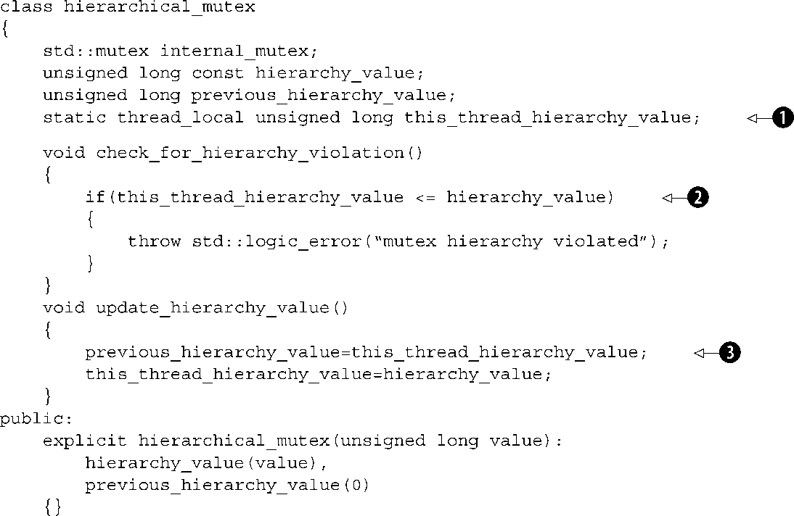
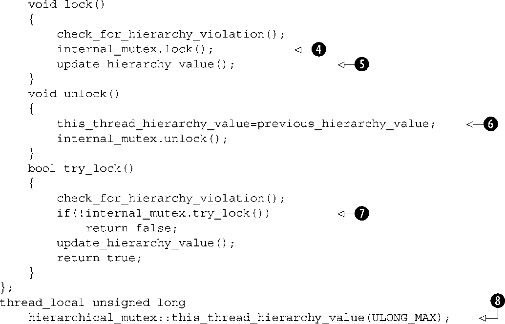
这里的关键是使用thread_local
的值来表示当前线程的层次值：this_thread_hierarchy_value
❶。它被初始化为最大值❽，所以在刚开始的时候任意互斥元都可以被锁定。由于它被声明为thread_local
，每个线程都有属于自己的副本，所以在一个线程中该变量的状态，完全独立于从另一个线程中读取的该变量状态。参阅附录A，A.8节可以获得关于thread_local
的更多信息。
因此，当线程第一次锁定hierarchical_mutex
的实例时，this_thread_hierarchy_value
的值为ULONG_MAX
。就其本质而言，ULONG_MAX
比其他任意值都大，所以通过了check_for_hierarchy_violation()
❷中的检查。在检查通过之后，lock()
代理内部的互斥元用以实际锁定❹。一旦该锁定成功，就可以更新层次值❺。
现在如果在持有第一个hierarchical_mutex
上的锁的同时，锁定另一个
hierarchical_mutex
，则this_thread_hierarchy_value
的值反映的是第一个互斥元的层次值。为了通过检查❷，第二个互斥元的层次值必须小于已经持有的互斥元的层次值。
现在，保存当前线程之前的层次值是很重要的，这样才能在unlock()
中恢复它❻；否则，你就无法再次锁定一个具有更高层次值的互斥元，即便该线程并没有持有任何锁。因为只有当你持有internal_mutex
时才能保存之前的层次值❸，并在解锁该内部互斥元之前
释放它❻，你可以安全地将其存储在hierarchical_mutex
自身中，因为它被内部互斥元上的锁安全地保护。
try_lock()
和lock()
工作原理相同，只是，如果在internal_mutex
上调用try_lock()
失败❼，那么你就无法拥有这个锁，所以不能更新层次值，并且返回false
而不是true
。
虽然检测是在运行时间检查，但它至少不依赖于时间——你不必去等待能够导致死锁出现的罕见情况发生。此外，需要以这种方式划分应用程序和互斥元的设计流程，可以在写入代码之前帮助消除许多可能导致死锁的原因。即使你还没有到达实际编写运行时间检测的那一步，进行设计练习仍然是值得的。
5．将这些设计准则扩展到锁之外
正如我在本节开始时提到的，死锁不只是出现于锁定中，它可以发生在任何可以导致循环等待的同步结构中。因此，扩展上面所述的准则来涵盖那些情况也是值得的。举个例子，正如你应该尽量避免获取嵌套锁那样，在持有锁时等待一个线程是坏主意，因为该线程可能需要获取这个锁以继续运行。类似地，如果你正要等待一个线程完成，指定线程层次结构可能也是值得的，这样线程就只需要等待低层次上的线程。一个简单的做到这一点的方法，就是确保你的线程在启动它们的同一个函数中被结合，就像3.1.2节和3.3节中所描述的那样。
一旦你设计了代码来避免死锁，std::lock()
和std::lock_guard
涵盖了大多数简单锁定的情况，但有时却需要更大的灵活性。在那种情况下，标准库提供了std::unique_lock
模板。与std::lock_guard
类似，std::unique_lock
是在互斥元类型上进行参数化的类模板，并且它也提供了与std::lock_guard
相同的RAII风格锁管理，但是更加灵活。
3.2.6 用std::unique_lock灵活锁定
通过松弛不变量，std::unique_lock
比std::lock_guard
提供了更多的灵活性，一个std::unique_lock
实例并不总是拥有与之相关联的互斥元。首先，就像你可以把std::adopt_lock
作为第二参数传递给构造函数，以便让锁对象来管理互斥元上的锁那样，你也可以把std::defer_lock
作为第二参数传递，来表示该互斥元在构造时应保持未被锁定。这个锁就可以在这之后通过在std::unique_lock
对象（不是
互斥元）上调用lock()
，或是通过将std::unique_lock
对象本身传递给std::lock()
来获取。使用std::unique_lock
和std::defer_lock
❶，而不是std::lock_guard
和std::adopt_lock
，能够很容易地将清单3.6写成清单3.9中所示的那样。这段代码具有相同的行数，并且本质上是等效的，除了一个小问题，std::unique_lock
占用更多空间并且使用起来比std::lock_guard
略慢。允许std::unique_lock
实例不
拥有互斥元的灵活性是有代价的，这条信息必须被存储，并且必须被更新。
清单3.9 在交换操作中使用std::lock()和std::unique_lock
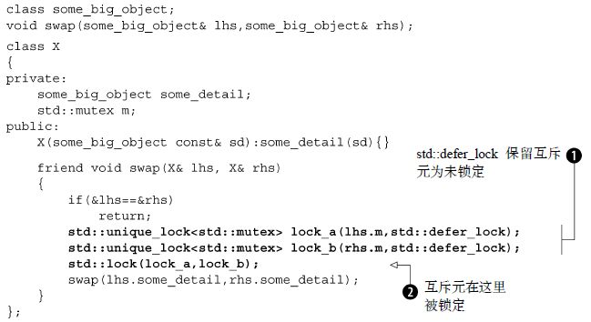
在清单3.9中，std::unique_lock
对象能够被传递给std::lock()
❷，因为std::unique_lock
提供了lock()
、try_lock()
和unlock()
三个成员函数。它们会转发给底层互斥元上同名的成员函数去做实际的工作，并且只是更新在std::unique_lock
实例内部的一个标识，来表示该实例当前是否拥有此互斥元。为了确保unlock()
在析构函数中被正确调用，这个标识是必需的。如果该实例确已
拥有此互斥元，则析构函数必须
调用unlock()
，并且，如果该实例并未
拥有此互斥元，则析构函数绝不能
调用unlock()
。可以通过调用owns_lock()
成员函数来查询这个标识。
如你所想，这个标识必须被存储在某个地方。因此，std::unique_lock
对象的大小通常大于std::lock_guard
对象，并且相比于std::lock_guard
，使用std::unique_lock
的时候，会有些许性能损失，因为需要对标识进行相应的更新或检查。如果std::lock_guard
足以满足需求，我会建议优先使用它。也就是说，还有一些使用std::unique_lock
更适合于手头任务的情况，因为你需要利用额外的灵活性。一个例子就是延迟锁定，正如你已经看到的；另一种情况是锁的所有权需要从一个作用域转移到另一个作用域。
3.2.7 在作用域之间转移锁的所有权
因为std::unique_lock
实例并没有拥有与其相关的互斥元，所以通过四处移动（moving）
实例，互斥元的所有权可以在实例之间进行转移。在某些情况下这种转移是自动的，比如从函数中返回一个实例，而在其他情况下，你必须通过调用std::move()
来显式实现。从根本上说，这取决于源是否为左值（lvalue）
——实变量或对实变量的引用——或者是右值（rvalue）
——某种临时量。如果源为右值，则所有权转移是自动的，而对于左值，所有权转移必须显式地完成，以避免从变量中意外地转移了所有权。std::unique_lock就是可移动（movable）
但不可复制（copyable）
的类型的例子。关于移动语义的详情，可参阅附录A中A.1.1节。
一种可能的用法，是允许函数锁定一个互斥元，并将此锁的所有权转移给调用者，于是调用者接下来可以在同一个锁的保护下执行额外的操作。下面的代码片段展示了这样的例子：函数get_lock()
锁定了互斥元，然后在将锁返回给调用者之前准备数据。
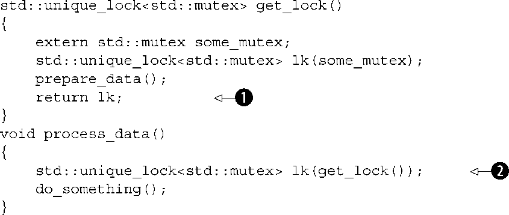
因为lk
是在函数内声明的自动变量，它可以被直接返回❶而无需调用std：：move()
；编译器负责调用移动构造函数。process_data()
函数可以直接将所有权转移到它自己的std::unique_lock
实例❷，并且对do_something()
的调用能够依赖被正确准备了的数据，而无需另一个线程在此期间去修改数据。
通常使用这种模式，是在待锁定的互斥元依赖于程序的当前状态，或者依赖于传递给返回std::unique_lock
对象的函数的参数的地方。这种用法之一，就是并不直接返回锁，但是使用一个网关类的数据成员，以确保正确锁定了对受保护的数据的访问。这种情况下，所有对该数据的访问都通过这个网关类，当你想要访问数据时，就获取这个网关类的实例（通过调用类似于前面例子中的get_lock()
函数），它会获取锁。然后，你可以通过网关对象的成员函数来访问数据。在完成后，销毁网关对象，从而释放锁，并允许其他线程访问受保护的数据。这样的网关对象很可能是可移动的（因此它可以从函数返回），在这种情况下，锁对象的数据成员也需要是可移动的。
std::unique_lock
的灵活性同样允许实例在被销毁之前撤回它们的锁。你可以使用unlock()
成员函数来实现，就像对于互斥元那样，std::unique_lock
支持与互斥元一样的用来锁定和解锁的基本成员函数集合，这是为了让它可以用于通用函数，比如std::lock
。在std::unique_lock
实例被销毁之前释放锁的能力，意味着你可以有选择地在特定的代码分支释放锁，如果很显然不再需要这个锁，这对于应用程序的性能可能很重要。持有锁的时间比所需时间更长，会导致性能下降，因为其他等待该锁的线程，被阻止运行超过了所需的时间。
3.2.8 锁定在恰当的粒度
锁粒度是我在之前曾提到过的，在3.2.3节中：锁粒度是一个文字术语，用来描述由单个锁所保护的数据量。细粒度锁保护着少量的数据，粗粒度锁保护着的大量的数据。选择一个足够粗的锁粒度，来确保所需的数据都被保护是很重要的，不仅如此，同样重要的是，确保只在真正需要锁的操作中持有锁。我们都知道，带着满满一车杂货在超市排队结账，只因为正在结账的人突然意识到自己忘了一些小红莓酱，然后就跑去找，而让大家都等着，或者收银员已经准备好收钱，顾客才开始在自己的手提包里翻找钱包，是很令人抓狂的。如果每个人去结账时都拿到了他们想要的，并准备好了适当的支付方式，一切都更容易进行。
这同样适用于线程，如果多个线程正等待着同一个资源（收银台的收银员），然后，如果任意线程持有锁的时间比所需时间长，就会增加等待所花费的总时间（不要等到你已经到了收银台才开始寻找小红莓酱）。如果可能，仅在实际访问共享数据的时候锁定互斥元，尝试在锁的外面做任意的数据处理。特别地，在持有锁时，不要做任何确实很耗时的活动，比如文件I/O。文件I/O通常比从内存中读取或写入相同大小的数据量要慢上数百倍（如果不是数千倍）。因此，除非这个锁是真的想保护对文件的访问，否则在持有锁时进行I/O会不必要地延迟其他 线程（因为它们在等待获取锁时会阻塞），潜在地消除了使用多线程带来的性能提升。
std::unique_lock
在这种情况下运作良好，因为能够在代码不再需要访问共享数据时调用unlock()
，然后在代码中又需要访问时再次调用lock()
。
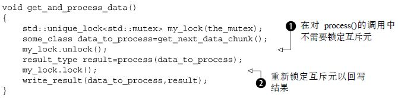
在调用process()
过程中不需要锁定互斥元，所以手动地将其在调用前解锁❶，并在之后再次锁定❷。
希望这是显而易见的，如果你让一个互斥锁保护整个数据结构，不仅可能会有更多的对锁的竞争，锁被持有的时间也可能会减少。更多的操作步骤会需要在同一个互斥元上的锁，所以锁必须被持有更长的时间。这种成本上的双重打击，也是尽可能走向细粒度锁定的双重激励。
如这个例子所示，锁定在恰当的粒度不仅关乎锁定的数据量；这也是关系到锁会被持有多长时间，以及在持有锁时执行哪些操作。一般情况下，只应该以执行要求的操作所需的最小可能时间而去持有锁 。这也意味着耗时的操作，比如获取另一个锁（即便你知道它不会死锁）或是等待I/O完成，都不应该在持有锁的时候去做，除非绝对必要。
在清单3.6和清单3.9中，需要锁定两个互斥锁的操作是交换操作，这显然需要并发访问两个对象。假设取而代之，你试图去比较仅为普通int
的简单数据成员。这会有区别吗？int
可以轻易被复制，所以你可以很容易地为每个待比较的的对象复制其数据，同时只用持有该对象的锁，然后比较已复制数值。这意味着你在每个互斥元上持有锁的时间最短，并且你也没有在持有一个锁的时候去锁定另外一个。清单3.10展示了这样的一个类Y
，以及相等比较运算符的示例实现。
清单3.10 在比较运算符中每次锁定一个互斥元
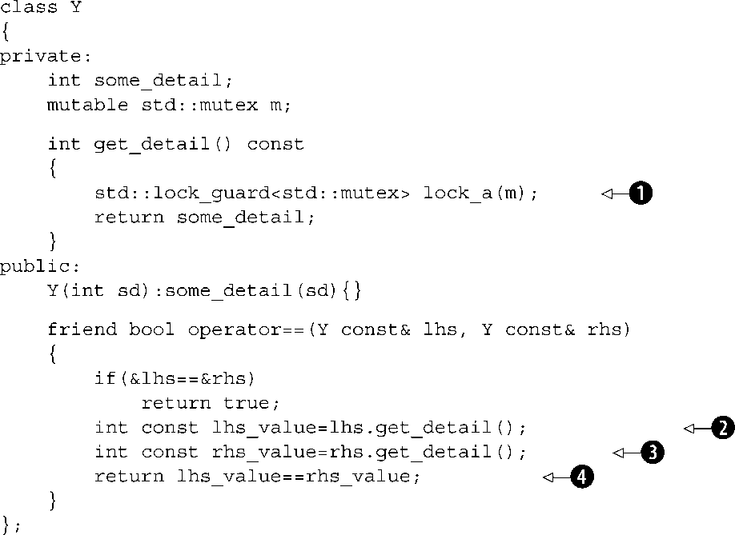
在这种情况下，比较运算符首先通过调用get_detail()
成员函数获取要进行比较的值❷、❸。此函数在获取值的同时用一个锁来保护它❶。比较运算符接着比较获取到的值❹。但是请注意，这同样会减少锁定的时间，而且每次只持有一个锁（从而消除了死锁的可能性），与同时持有两个锁相比，这巧妙地改变了操作的语义
。在清单3.10中，如果运算符返回true
，意味着lhs.some_detail
在一个时间点的值与rhs.some_detail
在另一个时间点的值相等。这两个值能够在两次读取之中以任何方式改变。例如，这两个值可能在❷和❸之间进行了交换，从而使这个比较变得毫无意义。这个相等比较可能会返回true
来表示值是相等的，即使这两个值在某个瞬间从未真正地相等过。因此，当进行这样的改变时小心注意是很重要的，操作的语义不能以有问题的方式而被改变：如果你不能在操作的整个持续时间中持有所需的锁，你就把自己暴露在竞争条件中
。
有时，根本就没有一个合适的粒度级别，因为并非所有的对数据结构的访问都要求同样级别的保护。在这种情况下，使用替代机制来代替普通的std::mutex
可能才是恰当的。
3.3 用于共享数据保护的替代工具
虽然互斥元是最通用的机制，但提到保护共享数据时，它们并不是唯一的选择；还有别的替代品，可以在特定情况下提供更恰当的保护。
一个特别极端（但却相当常见）的情况，就是共享数据只在初始化时才需要并发访问的保护，但在那之后却不需要显式同步。这可能是因为数据是一经创建就是只读的，所以就不存在可能的同步问题，或者是因为必要的保护作为数据上操作的一部分被隐式地执行。在任一情况中，在数据被初始化之后锁定互斥元，纯粹是为了保护初始化，这是不必要的，并且对性能会产生的不必要的打击。为了这个原因，C++标准提供了一种机制，纯粹为了在初始化过程中保护共享数据。
3.3.1 在初始化时保护共享数据
假设你有一个构造起来非常昂贵的共享资源，只有当实际需要时你才会要这样做。也许，它会打开一个数据库连接或分配大量的内存。像这样的延迟初始化（lazyinitialization） 在单线程代码中是很常见的——每个请求资源的操作首先检查它是否已经初始化，如果没有就在使用之前初始化之。
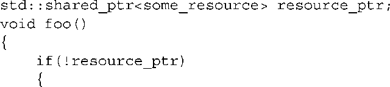
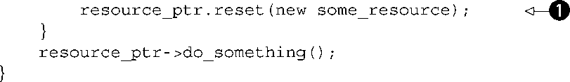
如果共享资源本身对于并发访问是安全的，当将其转换为多线程代码时唯一需要保护的部分就是初始化❶，但是像清单3.11中这样的朴素的转换，会引起使用该资源的线程产生不必要的序列化。这是因为每个线程都必须等待互斥元，以检查资源是否已经被初始化。
清单3.11 使用互斥元进行线程安全的延迟初始化
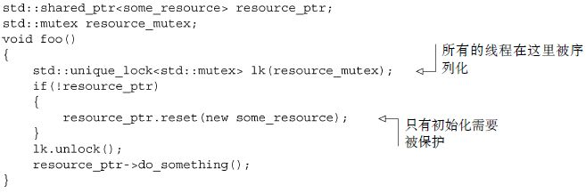
这段代码是很常见的，不必要的序列化问题已足够大，以至于许多人都试图想出一个更好的方法来实现，包括臭名昭著的二次检查锁定（Double-CheckedLocking）
模式，在不获取锁❶（在下面的代码中）的情况下首次读取指针，并仅当此指针为NULL
时获得该锁。一旦已经获取了锁，该指针要被再次
检查❷（这就是二次检查
的部分），以防止在首次检查和这个线程获取锁之间，另一个线程就已经完成了初始化。
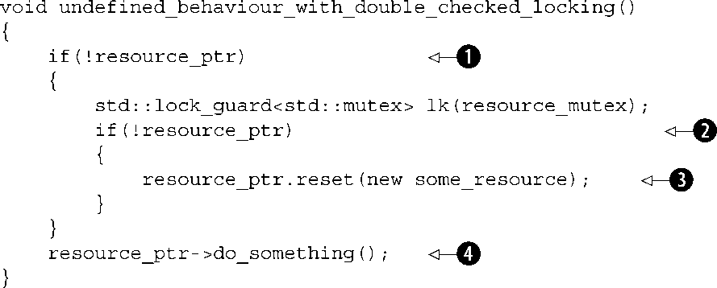
不幸的是，这种模式因某个原因而臭名昭著。它有可能产生恶劣的竞争条件，因为在锁外部的读取❶与锁内部由另一线程完成的写入不同步❸。这就因此创建了一个竞争条件，不仅涵盖了指针本身，还涵盖了指向的对象。就算一个线程看到另一个线程写入的指针，它也可能无法看到新创建的some_resource
实例，从而导致do_something()
❹的调用在不正确的值上运行。这是一个竞争条件的例子，该类型的竞争条件被C++标准定义为数据竞争（datarace）
，因此被定为未定义行为
。因此，这是肯定需要避免的。内存模型的详细讨论参见第5章，包括了什么构成数据竞争
。
C++标准委员会也发现这是一个重要的场景，所以C++标准库提供了std::once_flag
和std::call_once
来处理这种情况。与其锁定互斥元并且显式地检查指针，还不如每个线程都可以使用std::call_once
，到std::call_once
返回时，指针将会被某个线程初始化（以完全同步的方式），这样就安全了。使用std::call_once
比显式使用互斥元通常会有更低的开销，特别是初始化已经完成的时候，所以在std::call_once
符合所要求的功能时应优先使用之。下面的例子展示了与清单3.11相同的操作，改写为使用std::call_once
。在这种情况下，通过调用函数来完成初始化，但是通过一个带有函数调用操作符的类实例也可以很容易地完成初始化。与标准库中接受函数或者断言作为参数的大部分函数类似，std::call_once
可以与任意函数或可调用对象合作。
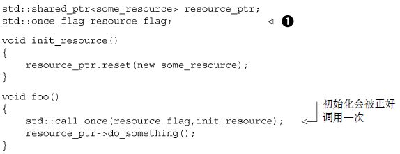
在这个例子中，std::once_flag
❶和被初始化的数据都是命名空间作用域的对象，但是std::call_once()
可以容易地用于类成员的延迟初始化，如清单3.12所示。
清单3.12 使用std::call_once的线程安全的类成员延迟初始化
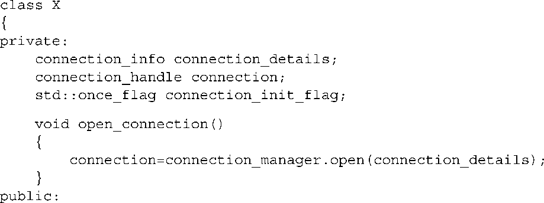
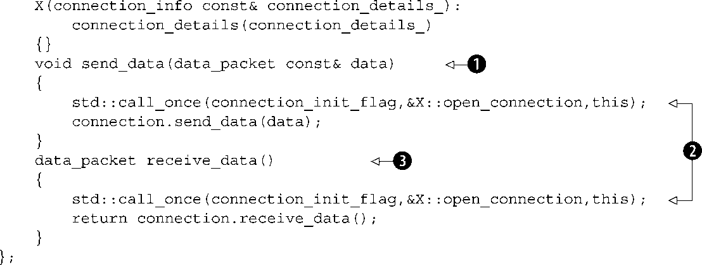
在这个例子中，初始化由首次调用send_data()
❶或是由首次调用receive_data()
❸来完成。使用成员函数open_connection()
来初始化数据，同样需要将this
指针传入函数。和标准库中其他接受可调用对象的函数一样，比如std::thread
和std::bind()
的构造函数，这是通过传递一个额外的参数给std::call_once()
来完成的❷。
值得注意的是，像std::mutex
、std::once_flag
的实例是不能被复制或移动的，所以如果想要像这样把它们作为类成员来使用，就必须显式定义这些你所需要的特殊成员函数。
一个在初始化过程中可能会有竞争条件的场景，是将局部变量声明为static
的。这种变量的初始化，被定义为在时间控制首次经过其声明时发生。对于多个调用该函数的线程，这意味着可能会有针对定义“首次”的竞争条件。在许多C++11之前的编译器上，这个竞争条件在实践中是有问题的，因为多个线程可能都认为它们是第一个，并试图去初始化该变量，又或者线程可能会在初始化已在另一个线程上启动但尚未完成之时试图使用它。在C++11中，这个问题得到了解决。初始化被定义为只发生在一个线程上，并且其他线程不可以继续直到初始化完成，所以竞争条件仅仅在于哪个线程会执行初始化，而不会有更多别的问题。对于需要单一全局实例的场合，这可以用作std::call_once
的替代品。

多个线程可以继续安全地调用get_my_class_instance()
❶，而不必担心初始化时的竞争条件。
保护仅用于初始化的数据是更普遍的场景下的一个特例，那些很少更新的数据结构。对于大多数时间而言，这样的数据结构是只读的，因而可以毫无顾忌地被多个线程同时读取，但是数据结构偶尔可能需要更新。这里我们所需要的是一种承认这一事实的保护机制。
3.3.2 保护很少更新的数据结构
假设有一个用于存储DNS条目缓存的表，它用来将域名解析为相应的IP地址。通常，一个给定的DNS条目将在很长一段时间里保持不变——在许多情况下，DNS条目会保持数年不变。虽然随着用户访问不同的网站，新的条目可能会被不时地添加到表中，但这一数据却将在其整个生命中基本保持不变。定期检查缓存条目的有效性是很重要的，但是只有在细节已有实际改变的时候才会需要更新。
虽然更新是罕见的，但它们仍然会发生，并且如果这个缓存可以从多个线程访问，它就需要在更新过程中进行适当的保护，以确保所有线程在读取缓存时都不会看到损坏的数据结构。
在缺乏完全符合预期用法并且为并发更新与读取专门设计（例如在第6章和第7章的那些）的专用数据结构的情况下，这种更新要求线程在进行更新时独占访问数据结构，直到它完成了操作。一旦更新完成，该数据结构对于多线程并发访问又是安全的了。使用std::mutex
来保护数据结构就因而显得过于悲观，因为这会在数据结构没有进行修改时消除并发读取数据结构的可能，我们需要的是另一种互斥元。这种新的互斥元通常称为读写（reader-writer）
互斥元，因为它考虑到了两种不同的用法：由单个“写”线程独占访问或共享，由多个“读”线程并发访问。
新的C++标准库并没有直接提供这样的互斥元，尽管已向标准委员会提议 [3] 。由于这个建议未被接纳，本节中的例子使用由Boost库提供的实现，它是基于这个建议的。在第8章中你会看到，使用这样的互斥元并不是万能药，性能依赖于处理器的数量以及读线程和更新线程的相对工作负载。因此，分析代码在目标系统上的性能是很重要的，以确保额外的复杂度会有实际的收益。
你可以使用boost::shared_mutex
的实例来实现同步，而不是使用std::mutex
的实例。对于更新操作，std::lock_guard<boost::shared_mutex>
和std::unique_lock<boost::shared_mutex>
可用于锁定，以取代相应的std::mutex
特化。这确保了独占访问，就像std::mutex
那样。那些不需要更新数据结构的线程能够转而使用boost::shared_lock<boost::shared_mutex>
来获得共享
访问。这与std::unique_lock
用起来正是相同的，除了多个线程在同一时间、同一boost::share_mutex
上可能会具有共享锁。唯一的限制是，如果任意一个线程拥有一个共享锁，试图获取独占锁的线程会被阻塞，直到其他线程全都撤回它们的锁，同样地，如果任意一个线程具有独占锁，其他线程都不能获取共享锁或独占锁，直到第一个线程撤回了它的锁。
清单3.13展示了一个简单的如前面所描述的DNS缓存，使用std::map
来保存缓存数据，用boost::share_mutex
进行保护。
清单3.13 使用boost::share_mutex保护数据结构
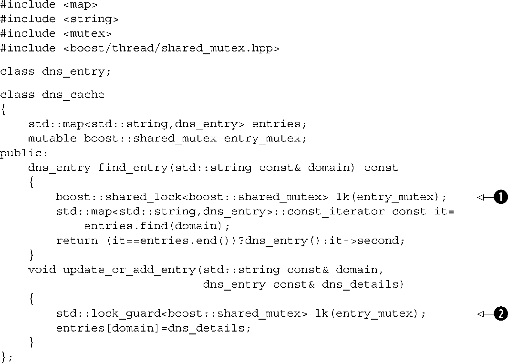
在清单3.13中，find_entry()
使用一个boost::share_lock<>
实例来保护它，以供共享、只读的访问❶；多个线程因而可以毫无问题地同时调用find_entry()
。另一方面，update_or_add_entry()
使用一个std::lock_guard<>
实例，在表被更新时提供独占访问❷；不仅在调用update_or_add_entry()
中其他线程被阻止进行更新，调用find_entry()
的线程也会被阻塞。
3.3.3 递归锁
在使用std::mutex
的情况下，一个线程试图锁定其已经拥有的互斥元是错误的，并且试图这么做将导致未定义行为（undefinedbehavior）
。然而，在某些情况下，线程多次重新获取同一个互斥元却无需事先释放它是可取的。为了这个目的，C++标准库提供了std::recursive_mutex
。它就像std::mutex
一样，区别在于你可以在同一个线程中的单个实例上获取多个锁。在互斥元能够被另一个线程锁定之前，你必须释放所有的锁，因此如果你调用lock()
三次，你必须也调用unlock()
三次。正确使用std::lock_guard<std::recursive_mutex>
和std::unique_lock<std::recursive_mutex>
将会为你处理。
大多数时间，如果你觉得需要一个递归互斥元，你可能反而需要改变你的设计。递归互斥元常用在一个类被设计成多个线程并发访问的情况中，因此它具有一个互斥元来保护成员数据。每个公共成员函数锁定互斥元，进行工作，然后解锁互斥元。然而，有时一个公共成员函数调用另一个函数作为其操作的一部分是可取的。在这种情况下，第二个成员函数也将尝试锁定该互斥元，从而导致未定义行为。粗制滥造的解决方案，就是将互斥元改为递归互斥元。这将允许在第二个成员函数中对互斥元的锁定成功进行，并且函数继续。
然而，这样的用法是不推荐 的，因为它可能导致草率的想法和糟糕的设计。特别地，类的不变量在锁被持有时通常是损坏的，这意味着第二个成员函数需要工作，即便在被调用时使用的是损坏的不变量。通常最好是提取一个新的私有成员函数，该函数是从这两个成员函数中调用的，它不锁定互斥元（它认为互斥元已经被锁定）。然后，你可以仔细想想在什么情况下可以调用这个新函数以及在那些情况下数据的状态。
3.4 小结
在本章中，我讨论了在线程之间共享数据时，有问题的竞争条件如何成为灾难，以及怎样使用std:mutex
和精心设计接口以避免它们。你看到了互斥元不是万能药，也有它们自己的以死锁形式出现的问题，尽管C++标准库以std::lock()
的形式提供了工具来帮助避免死锁。然后，你看到了一些进一步的技术来避免死锁，接着简要看了一下锁的所有权的转让，以围绕着为锁选择恰当的粒度的问题。最后，我介绍了为特定场景提供的替代的数据保护工具，例如std::call_once()
和boost::shared_mutex
。
然而，还有一件事我没有提到，就是等待来自其他线程的输入。我们的线程安全栈在栈为空的情况下只是引发异常，因此如果一个线程需要等待另一个线程来将一个值压入栈中（毕竟，这是线程安全栈的主要用途之一），它将不得不反复尝试弹出值，如果引发异常则重试。这会消耗宝贵的处理时间来进行检查，而没有实际取得任何进展。的确，不断地检查可能会通过阻止系统中其他线程的运行而阻碍 进度。我们需要的是以某种方法让一个线程等待另一个线程完成任务，而无需耗费CPU时间。第4章构建在已经讨论过的用于保护共享数据的工具上，介绍了C++中用于线程间同步操作的各种机制；第6章展示了如何使用它们来构建更大的可复用的数据结构。
[1] Tom Cargill, Exception Handling: A False Sense of Security, in C++ Report 6, no. 9 (November– December 1994). Also available at http://www.informit.com/content/images/020163371x/supplements/Exception_Handling_Article.html
[2] Herb Sutter, Exceptional C++: 47 Engineering Puzzles, Programming Problems, and Solutions (Addison Wesley Professional, 1999)
[3] Howard E. Hinnant, “Multithreading API for C++0X—A Layered Approach”, C++ Standards Committee Paper N2094, http://www.open-std.org/jtc1/sc22/wg21/docs/papers/2006/n2094.html
Table of contents
- 版权信息
- 版权声明
- 内容提要
- 序
- 译者简介
- 致谢
- 前言
- 资源
- 简要目录
- 第1章 你好，C++并发世界
- 第2章 管理线程
- 第3章 在线程间共享数据
- 第4章 同步并发操作
- 第5章 C++内存模型和原子类型上操作
- 第6章 设计基于锁的并发数据结构
- 第7章 设计无锁的并发数据结构
- 第8章 设计并发代码
- 第9章 高级线程管理
- 第10章 多线程应用的测试与调试
- 附录A C++11部分语言特性简明参考
- 附录B 并发类库简要对比
- 附录C 消息传递框架与完整的ATM示例
-
附录D C++线程类库参考
- D.1 <chrono>头文件
- D.2 <condition_variable>头文件
-
D.3 <atomic>头文件
- D.3.1 std::atomic_xxx typedef
- D.3.2 ATOMIC_xxx_LOCK_FREE宏
- D.3.3 ATOMIC_VAR_INIT宏
- D.3.4 std::memory_order枚举
- D.3.5 std::atomic_thread_fence函数
- D.3.6 std::atomic_signal_fence函数
- D.3.7 std::atomic_flag类
- D.3.8 std::atomic类模板
- D.3.9 std::atomic模板的特化
- D.3.10 std::atomic<integral-type>特化
- D.3.11 std::atomic<T*>偏特化
- D.4 <future>头文件
- D.5 <mutex>头文件
-
D.6 <ratio>头文件
- D.6.1 std::ratio类模板
- D.6.2 std::ratio_add模板别名
- D.6.3 std::ratio_subtract模板别名
- D.6.4 std::ratio_multiply模板别名
- D.6.5 std::ratio_divide模板别名
- D.6.6 std::ratio_equal类模板
- D.6.7 std::ratio_not_equal类模板
- D.6.8 std::ratio_less类模板
- D.6.9 std::ratio_greater类模板
- D.6.10 std::ratio_less_equal类模板
- D.6.11 std::ratio_greater_equal类模板
- D.7 <thread>头文件
- 欢迎来到异步社区！
- 看完了